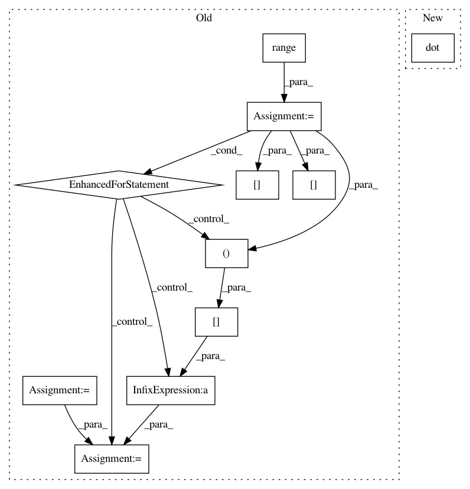

7ea8c3e6d162ef47fbcfcb6621ff7633d91ae61d,tslearn/early_classification.py,NonMyopicEarlyClassification,_expected_cost,#NonMyopicEarlyClassification#Any#Any#,180
Before Change
--------
float : the computed cost
cost = 0
proba_clusters = self.get_cluster_probas(X=X)
truncated_t = X.shape[-1]
for k in range(0, self.n_clusters):
sum_pyhatyck = np.sum(self.pyhatyck_["pyhatycks{0}".format(k)][
truncated_t + tau - self.minimum_time_stamp
], axis=0)
sum_global = np.dot(sum_pyhatyck, self.pyck_[:, k])
cost = cost + proba_clusters[:, k] * sum_global
return cost
def minimize_integer(self, end_of_time, xt):
After Change
sum_pyhatyck = np.sum(self.pyhatyck_[truncated_t + tau - self.minimum_time_stamp], axis=1)
sum_pyhatyck = np.transpose(sum_pyhatyck)
sum_global = np.sum((sum_pyhatyck * self.pyck_), axis=0)
cost = np.dot(proba_clusters, sum_global)
return cost + self._cost_time(truncated_t + tau)
def cost_function_minimizer(self, end_of_time, xt):
In pattern: SUPERPATTERN
Frequency: 3
Non-data size: 11
Instances
Project Name: rtavenar/tslearn
Commit Name: 7ea8c3e6d162ef47fbcfcb6621ff7633d91ae61d
Time: 2020-04-16
Author: francois-33
File Name: tslearn/early_classification.py
Class Name: NonMyopicEarlyClassification
Method Name: _expected_cost
Project Name: scipy/scipy
Commit Name: f529deccde4a185a6c0f98f0968154f922abb86e
Time: 2007-07-12
Author: cournape@gmail.com
File Name: Lib/sandbox/pyem/densities.py
Class Name:
Method Name: _diag_gauss_den
Project Name: data61/python-paillier
Commit Name: 103e31b4a2518797606d3b93440740df0532770d
Time: 2017-06-20
Author: giorgio.patrini@anu.edu.au
File Name: examples/federated_learning_with_encryption.py
Class Name: Client
Method Name: compute_gradient